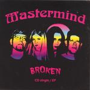

Home Artist links

Mastermind - Broken
| Artist: | Mastermind |
| Title: | Broken |
| Label: | self produced |
| Length(s): | 44 minutes |
| Year(s) of release: | 2005 |
| Month of review: | [10/2007] |
Line up
Bill Berends - guitar, synth, vocal
Laura Johnson - bass, vocal
Tracy McShane - lead vocals
Rich Berends - drums
Tracks
| 1) | Broken | 4.22
|
| 2) | Break Me Down | 3.30
|
| 3) | Weak & Powerless | 5.08
|
| 4) | The Queen Of Sheba | 9.02
|
| 5) | William Tell Overture | 3.13
|
| 6) | I'm So Glad | 5.14
|
| 7) | A Million Miles Away | 8.01
|
| 8) | Broken (remix) | 5.35
|
Summary
It has been a looong time since we heard of Mastermind. The band is now
a foursome, and this EP was released to tie us over to the next
official studio album. Weak & Powerless is by the way a song by A Perfect Circle.
The first two tracks are from the upcoming album, while 4-7 are live songs.
The music
McShane has a flexible voice.
Broken is the ehm single, with plodding rock along an arabic melody. The song is
good showing the flexible rock voice of McShane. In the higher regions
she is quite close to Lana Lane.
Break Me Down is more plodding even, heavier, yet melodically accessible.
It is also more proggy, with more variation and dense guitarwork. Still, the band
has more the feel of a progressive hard rock band, than a progmetal band.
Weak & Powerless sounds a bit like Mythologic, but is a cover of A Perfect Circle song. The rhythm section is strong here, with Rich going against the grain,
and a strong bass presence. The last two songs are a bit darker than the previous
studio record, which in my book is a good thing.
The following four tracks were recorded live during rehearsal.
The Queen Of Sheba is more reminiscent of the old Mastermind, which of course
has to do with the fact that this a track from the previous album. The Lana Lane
reference is a bit stronger. I am not too happy with the speedy chorus,
and like more where the band, in the light of the previous three tracks, have gone
too: darker and more concise.
William Tell Overture is a well-known classic tune, and it is fun to have it
included here. It shows Berends hands racing over the fretboard.
A Million Miles Away is another melodic rock/metal song, with Tracy doing the main
vocals and Bill Berends in support. The song is strong enough, with some doses
of bluesy guitar soloing. The drums simply plod along, with a few thrills
added here and there.
I'm So Glad is another cover. It opens with a record being played. Is this blues? Seems like it. The song is a well-known pop song that comes off as rowdy and
southern. The mini album ends with a longer version of Broken (in a remix).
Conclusion
Mastermind is back on track. The ELP influences are gone by now, leaving an
excellent progressive hard rock band, a bit like a more adventurous Lana Lane.
Now let's hope the new album comes soon, because the new songs have made me
wanting more.
© Jurriaan Hage